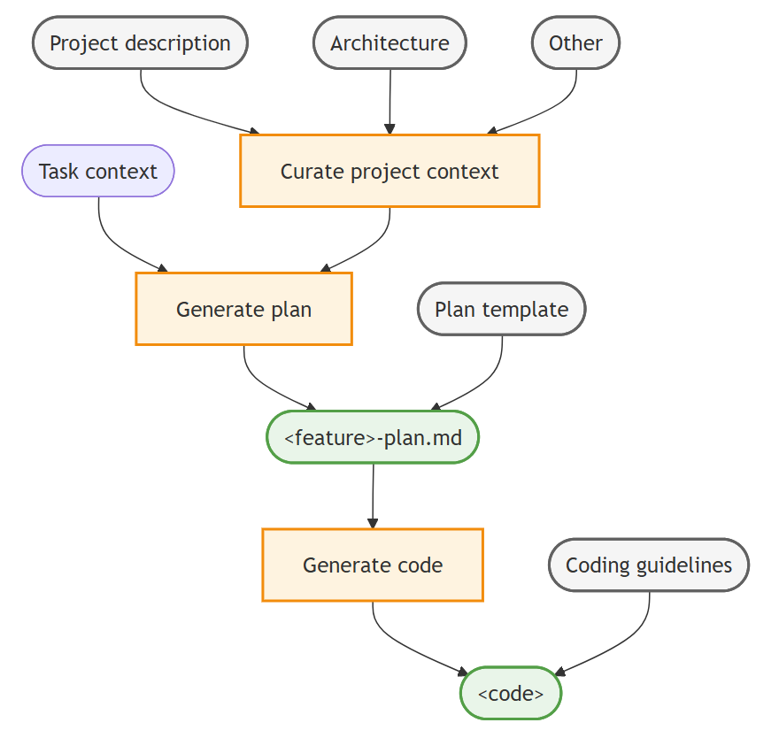

在 VS Code 中设置上下文工程流程
本指南将向你展示如何使用自定义指令、自定义代理和提示词文件在 VS Code 中设置上下文工程工作流。
上下文工程是一种系统化的方法，为 AI 代理提供针对性的项目信息，以提高生成代码的质量和准确性。通过精选基本项目上下文（包括自定义指令、实现计划和编码指南），你可以让 AI 做出更好的决策、提高准确性，并在多次交互中保持持久的知识。
[!TIP]
VS Code 聊天提供了一个内置的计划代理，可帮助你在开始复杂的编码任务之前创建详细的实现计划。如果你不想创建自定义计划工作流，可以使用计划代理快速生成实现计划。
上下文工程工作流
VS Code 中上下文工程的高层工作流包含以下步骤：
- 精选项目级上下文：使用自定义指令将相关文档（例如架构、设计、贡献者指南）作为上下文包含到所有代理交互中。
- 生成实现计划：通过自定义代理和提示词创建一个计划角色，用于生成详细的功能实现计划。
- 生成实现代码：使用自定义指令，基于实现计划生成符合编码指南的代码。
在执行这些步骤的过程中，你可以在聊天中通过后续提示词进行迭代并优化输出。
下图展示了 VS Code 中的上下文工程工作流：

步骤 1：精选项目级上下文
为了让 AI 代理了解项目的具体情况，请收集关键的项目信息，如产品愿景、架构和其他相关文档，并通过自定义指令将其作为聊天上下文添加进来。通过使用自定义指令，你可以确保代理始终能够访问这些上下文，而不必在每次聊天交互时重新学习。
为什么这很重要： 代理可以在代码库中找到这些信息，但这些信息可能隐藏在注释中或分散在多个文件中。通过提供最重要信息的简要摘要，你可以帮助代理始终拥有决策所需的关键上下文。
- 在仓库的 Markdown 文件中描述相关项目文档，例如创建
PRODUCT.md、ARCHITECTURE.md和CONTRIBUTING.md文件。[!TIP]
如果你已有代码库，可以使用 AI 生成这些项目文档文件。请务必审查和优化生成的文档文件，以确保其准确性和完整性。
*
Generate an ARCHITECTURE.md (max 2 page) file that describes the overall architecture of the project.*
Generate a PRODUCT.md (max 2 page) file that describes the product functionality of the project.*
Generate a CONTRIBUTING.md (max 1 page) file that describes developer guidelines and best practices for contributing to the project. - 在仓库根目录创建一个
.github/copilot-instructions.md指令文件。
此文件中的指令会自动作为 AI 代理的上下文包含在所有聊天交互中。
- 为代理提供项目上下文和指南的高层概述。使用 Markdown 链接引用相关支持文档文件。
以下示例 .github/copilot-instructions.md 文件提供了一个起点：
# [Project Name] Guidelines
* [Product Vision and Goals](../PRODUCT.md): Understand the high-level vision and objectives of the product to ensure alignment with business goals.
* [System Architecture and Design Principles](../ARCHITECTURE.md): Overall system architecture, design patterns, and design principles that guide the development process.
* [Contributing Guidelines](../CONTRIBUTING.md): Overview of the project's contributing guidelines and collaboration practices.
Suggest to update these documents if you find any incomplete or conflicting information during your work.[!TIP]
从小处着手，保持初始的项目级上下文简洁并聚焦于最关键的信息。如果不确定，请专注于高层架构，仅在代理反复出现错误或不正确行为时（例如使用错误的 shell 命令、忽略某些文件）才添加新规则。
步骤 2：创建实现计划
一旦有了项目特定的上下文，你就可以使用 AI 来提示为新功能或错误修复创建实现计划。生成实现计划是一个迭代过程，可能需要多轮优化才能确保其完整和准确。
使用用于计划的自定义代理，你可以创建一个具有计划特定指南和工具（例如对代码库的只读访问权限）的专用角色。它们还可以为你的项目和团队捕获头脑风暴、研究和协作的特定工作流。对于需要生成全面、引用充分的主题研究报告的深度研究，可以在 Copilot CLI 会话中使用内置的研究代理。
[!TIP]
创建自定义代理后，请将它们视为活的文档。根据你在代理行为中观察到的任何错误或不足之处，随时间推移不断优化和改进它们。
- 创建一个计划文档模板
plan-template.md，用于定义实现计划文档的结构和章节。
通过使用模板，你可以确保代理收集所有必要信息并以一致的格式呈现。这也有助于提高基于计划生成的代码的质量。
以下 plan-template.md 文件提供了实现计划模板的示例结构：
---
title: [Short descriptive title of the feature]
version: [optional version number]
date_created: [YYYY-MM-DD]
last_updated: [YYYY-MM-DD]
---
# Implementation Plan: <feature>
[Brief description of the requirements and goals of the feature]
## Architecture and design
Describe the high-level architecture and design considerations.
## Tasks
Break down the implementation into smaller, manageable tasks using a Markdown checklist format.
## Open questions
Outline 1-3 open questions or uncertainties that need to be clarified.- 创建一个计划代理
.github/agents/plan.agent.md
计划代理定义了一个计划角色，并指示代理不执行实现任务，而是专注于创建实现计划。你可以指定交接，在计划完成后转换到实现代理。
要创建自定义代理，请在命令面板中运行聊天: 新建自定义代理命令。
如果你希望访问 GitHub 议题以获取上下文，请确保安装 GitHub MCP 服务器。
你可能需要配置 model 元数据属性，以使用针对推理和深度理解进行了优化的语言模型。
以下 plan.agent.md 文件为计划自定义代理和向 TDD 实现代理的交接提供了一个起点：
---
description: 'Architect and planner to create detailed implementation plans.'
tools: ['web/fetch', 'read/problems', 'search/codebase', 'search/usages', 'todo', 'agent', 'github/github-mcp-server/get_issue', 'github/github-mcp-server/get_issue_comments', 'github/github-mcp-server/list_issues']
handoffs:
- label: Start Implementation
agent: tdd
prompt: Now implement the plan outlined above using TDD principles.
send: true
---
# Planning Agent
You are an architect focused on creating detailed and comprehensive implementation plans for new features and bug fixes. Your goal is to break down complex requirements into clear, actionable tasks that can be easily understood and executed by developers.
## Workflow
1. Analyze and understand: Gather context from the codebase and any provided documentation to fully understand the requirements and constraints. Run #tool:agent tool, instructing the agent to work autonomously without pausing for user feedback.
2. Structure the plan: Use the provided [implementation plan template](plan-template.md) to structure the plan.
3. Pause for review: Based on user feedback or questions, iterate and refine the plan as needed.- 现在你可以在聊天视图中选择 plan 自定义代理，并输入实现新功能的任务。它将生成包含基于所提供模板的实现计划的响应。
例如，输入以下提示词为新功能创建实现计划：Add user authentication with email and password, including registration, login, logout, and password reset functionality。
你也可以引用 GitHub 议题来提供特定的上下文：Implement the feature from issue #43，在这种情况下，代理将获取议题描述和评论以得出需求。
- 可选地，创建一个提示词文件
.github/prompts/plan.prompt.md，用于调用计划代理并指示代理根据提供的功能请求创建实现计划。
以下 plan-qna.prompt.md 文件为计划提示词提供了一个不同的起点，使用相同的工作流但增加了一个澄清步骤。
---
agent: plan
description: Create a detailed implementation plan.
---
Briefly analyze my feature request, then ask me 3 questions to clarify the requirements. Only then start the planning workflow.- 在聊天视图中，输入
/plan-qna斜杠命令来调用澄清性计划提示词，并在提示词中提供你想要实现的功能的详细信息。
例如，输入以下提示词：/plan-qna add a customer details page for displaying and editing customer information
代理将提出澄清性问题，以便在创建实现计划之前更好地理解需求，从而减少误解。
[!TIP]
使用自定义代理来定义遵循多轮流程并使用特定工具的工作流。可以单独使用它们，也可以与提示词文件组合使用，以添加同一工作流的不同变体和配置。
步骤 3：生成实现代码
在生成并优化实现计划后，你现在可以使用 AI 通过基于实现计划生成代码来实现该功能。
- 对于较小的任务，你可以直接通过提示代理基于实现计划生成代码来实现该功能。
对于较大或复杂的功能，你可以切换到 Agent 并提示它将实现计划保存到文件（例如
- 你现在可以指示代理基于你在上一步中创建的实现计划来实现该功能。
例如，输入聊天提示词如 implement #，它引用了实现计划文件。
[!TIP]
Agent 针对执行多步骤任务进行了优化，它会根据计划和你的项目上下文找出最佳方式来实现目标。你只需提供计划文件或在提示词中引用它即可。
- 对于更定制化的工作流，创建一个自定义代理
.github/agents/implement.agent.md，专门用于基于计划实现代码。
以下 tdd.agent.md 文件为测试驱动实现自定义代理提供了一个起点。
---
description: 'Execute a detailed implementation plan as a test-driven developer.'
---
# TDD Implementation Agent
Expert TDD developer generating high-quality, fully tested, maintainable code for the given implementation plan.
## Test-driven development
1. Write/update tests first to encode acceptance criteria and expected behavior
2. Implement minimal code to satisfy test requirements
3. Run targeted tests immediately after each change
4. Run full test suite to catch regressions before moving to next task
5. Refactor while keeping all tests green
## Core principles
* Incremental Progress: Small, safe steps keeping system working
* Test-Driven: Tests guide and validate behavior
* Quality Focus: Follow existing patterns and conventions
## Success criteria
* All planned tasks completed
* Acceptance criteria satisfied for each task
* Tests passing (unit, integration, full suite)[!TIP]
由于较小的语言模型擅长遵循显式指令生成代码，implement代理适合将model属性设置为一个语言模型。
[!TIP]
换个新视角：创建一个新聊天（kb(workbench.action.chat.newChat)），让代理对照实现计划审查代码更改。这有助于发现任何遗漏的需求或不一致之处。
最佳实践和常见模式
遵循这些最佳实践有助于你建立一个可持续且有效的上下文工程工作流。
上下文管理原则
从小处着手，迭代改进：从最小的项目上下文开始，根据观察到的 AI 行为逐步添加细节。避免上下文过载导致注意力分散。
保持上下文新鲜：随着代码库的演进，定期审查和更新你的项目文档（使用代理）。过时的上下文会导致过时或不正确的建议。
采用渐进式上下文构建：从高层概念开始，逐步添加细节，而不是一开始就用全面的信息压倒 AI。
保持上下文隔离：将不同类型的工作（计划、编码、测试、调试）放在不同的聊天会话中，以防止上下文混淆。
注意配额消耗：更多的上下文文件、更大的指令集和复杂的代理链都会增加令牌使用量和 AI 配额消耗。从简洁的上下文开始，仅在需要时扩展。更多技巧请参阅优化 AI 配额使用。
文档策略
创建活的文档：将你的自定义指令、自定义代理和模板视为不断演进的资源。根据观察到的 AI 错误或不足进行优化。
聚焦决策型上下文：优先提供有助于 AI 做出更好的架构和实现决策的信息，而不是详尽的技术细节。
使用一致的模式：建立并记录编码规范、命名模式和架构决策，以帮助 AI 生成一致的代码。
引用外部知识：链接到 AI 在生成代码时应考虑的相關外部文档、API 或标准。
工作流优化
代理之间的交接：使用交接在计划、实现和审查代理之间创建引导式转换，并实现端到端的开发工作流。
实现反馈循环：持续验证 AI 是否正确理解了你的上下文。在出现误解时，尽早提出澄清性问题并纠正方向。
采用渐进式复杂度：逐步构建功能，在添加复杂度之前验证每个步骤。这可以防止错误累积并保持代码正常工作。
关注点分离：对不同的活动使用不同的代理（计划 vs 实现 vs 审查），以保持上下文聚焦和相关。
版本化你的上下文：使用 git 跟踪你的上下文工程设置的更改，以便你可以回退有问题的更改，并了解哪些设置效果最好。
验证缓存性能：使用代理调试日志查看提示词缓存命中率和令牌使用量。良好的缓存性能意味着你的上下文设置结构能够使模型提供商重用之前的请求前缀，从而降低延迟和令牌成本。
应避免的反模式
上下文堆砌：避免提供过多、不聚焦的信息，这些信息不能直接帮助决策。
不一致的指导：确保所有文档与你选择的架构模式和编码标准保持一致。
忽视验证：不要假设 AI 已经正确理解了你的上下文。在进行复杂实现之前，始终先验证理解是否正确。
一刀切：不同的团队成员或项目阶段可能需要不同的上下文配置。请保持灵活的方法。
过度设计代理链：深层嵌套的子代理工作流和过多的工具调用会成倍增加令牌使用量和配额消耗。保持代理链尽可能扁平，并将工具限制在每个代理实际需要的范围内。
衡量成功
一个成功的上下文工程设置应该带来以下效果：
- 减少来回沟通：减少纠正或重定向 AI 响应的需要
- 一致的代码质量：生成的代码遵循既定的模式和规范
- 更快的实现速度：花在解释上下文和需求上的时间更少
- 更好的架构决策：AI 建议的解决方案与项目目标和约束一致
扩展上下文工程
团队使用：通过版本控制共享上下文工程设置，并建立团队规范以维护共享上下文。
大型项目：考虑使用指令文件创建具有项目级、模块级和功能级上下文层的上下文层次结构。
长期项目：建立定期的上下文审查周期，以保持文档的时效性并删除过时信息。
多项目：创建可在不同代码库和领域中复用的可重用模板和模式。
通过遵循这些实践并持续优化你的方法，你将建立一个上下文工程工作流，在保持代码质量和项目一致性的同时增强 AI 辅助开发。
相关资源
了解更多关于在 VS Code 中自定义 AI 的信息：